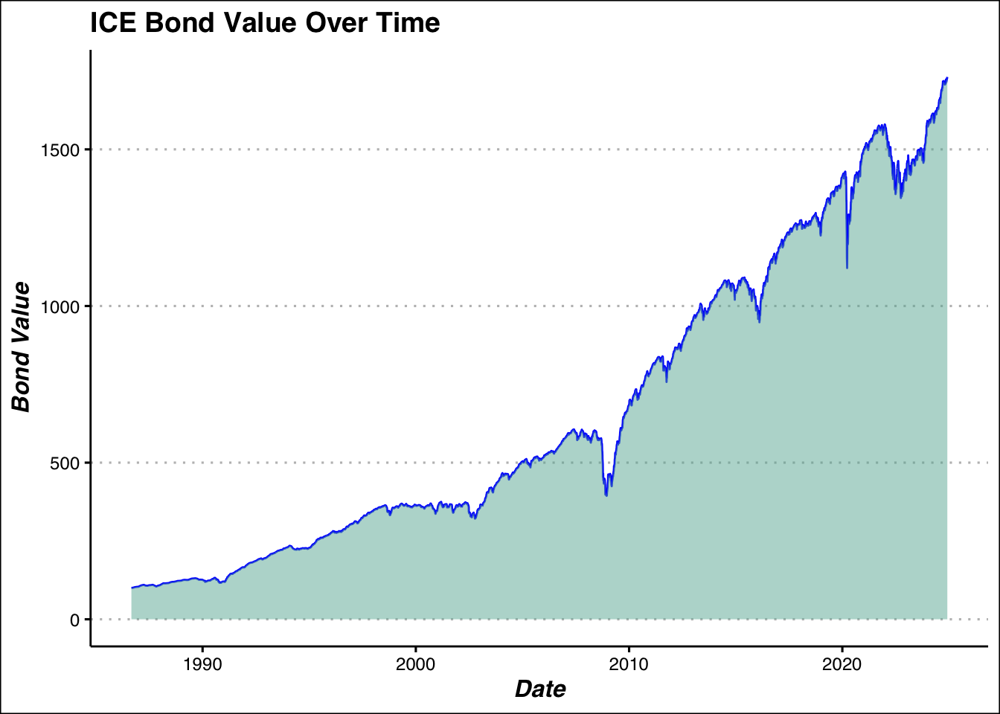
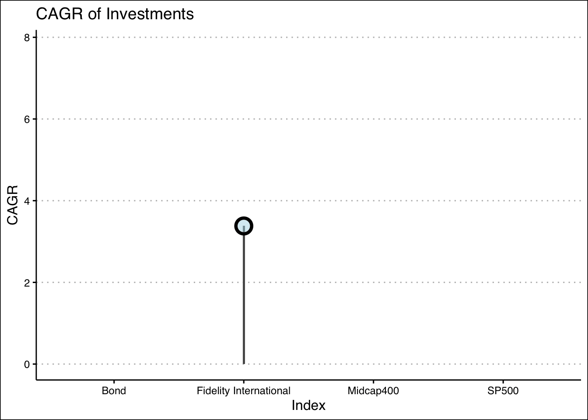
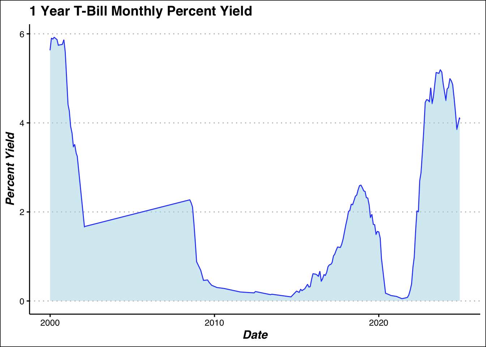
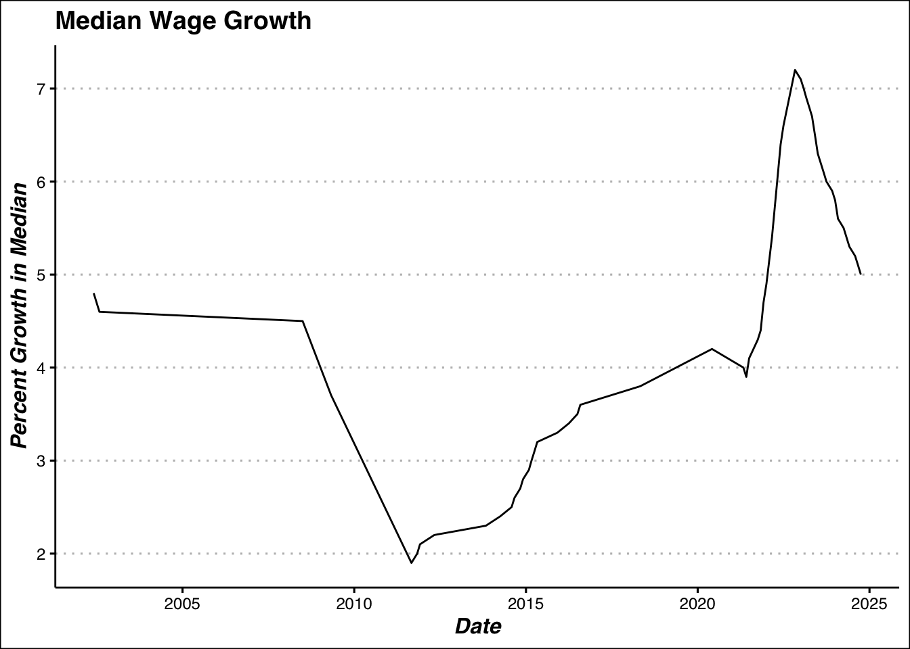

Code
library(dplyr)
library(ggplot2)
library(tidyr)
library(gganimate)
library(ggthemes)
library(httr)
library(jsonlite)In this analysis we will use a computational approach to evaluate the performance of retirement plans while accounting for variability and uncertainty in inputs such as salary growth, investment returns, and lifespan. By simulating thousands of possible scenarios, this method allows us to assess the range of potential outcomes and determine the likelihood of achieving a successful retirement.
Lets get all the libraries we need to start this analysis.
library(dplyr)
library(ggplot2)
library(tidyr)
library(gganimate)
library(ggthemes)
library(httr)
library(jsonlite)Once we have these we can start to get the data we need using APIs from Alpha Vantage and FRED Economic Reserve, both great sources that have several interesting datasets. Below you can see several functions that ive created to pull data from the API sources with ease. I will also use the readlines function to read the text for the super secret API key.
FRED_key <- readLines("~/R/Project_0/FRED_key.txt")
get_fred<- function(id){
base_url <- "https://api.stlouisfed.org/fred/series/observations?series_id="
res <- GET(paste0(base_url,id,"&api_key=",FRED_key,"&file_type=json"))
res_content <- content(res, as = "text", encoding = "UTF-8")
json <- fromJSON(res_content)
data <-json$observations
data <- data %>% mutate(value = as.numeric(value),# immediately convert to usable format
date = as.Date(date))
return(data)
}
AV_key <- readLines("~/R/Project_0/Alphavantage_key.txt")
GET_AV <- function(ticker){
url <-paste0("https://www.alphavantage.co/query?function=TIME_SERIES_MONTHLY_ADJUSTED","&symbol=",ticker,"&apikey=",AV_key)
res <- GET(url)
res_content<-(content(res,as = "text",encoding = "UTF-8"))
j <- fromJSON(res_content,flatten = TRUE)
data <- j$`Monthly Adjusted Time Series`
#### unpacking the data with a for loop
close <- c() #empty list to contain the list
low <- c()
volume <- c()
div <- c()
for(i in seq(1:length(data))){
close <- append(close,data[[i]][["4. close"]])
low <- append(low,data[[i]][["3. low"]])
volume <- append(volume,data[[i]][["6. volume"]])
div <-append(div,data[[i]][["7. dividend amount"]])
}
df <- data.frame(date = as.Date(names(data)),
close = as.numeric(close),
low = as.numeric(low),
volume = as.numeric(volume),
dividend = as.numeric(div))
return(df)
}Now that we have our functions we can start to get the data that we need. This data will come from the criteria for ORP the investment strategy, including American Equities, Foreign Equities, Bonds and Short Term Debt. For the American Equities we will use the SP500 and the MidCap 400 as the main investments. This is because of the saftey and power of Index funds. Choosing individual stocks requires constant vigilance, and unless you are Jim Simons, it is extremly unlikely that you “beat the market”. Thus, we will choose index funds when possible. Of course using hindsight we could have picked a stock like Apple,Tesla,or NVIDA from 2000 and watch as our retirement sky rockets, however this is unreasonable, as we are putting ourselves in the shoes of a CUNY employee who does not have the ability to see into the future. Similarly we will choose the Fidelity International Index (over some other international equities for reasons below), however since the history on several International equities don’t go as far back as out other index funds we will compute from the data we have and make do. Ideally we would have the same look back for all investments. For Bonds we will use the bond index from ICE and Bank of America, and pick 1 year T-bills for out short term debt.
Here we will clean the data,plot and all general EDA procedures. This is nothing new and has been done extensively through out the projects. Notably, I will compute the CAGR here which is the Compound Annual Growth Rate, allowing us to see based on start and end values which investment has the best growth. In cases where the values themselves are rates, like the Tbill rates, we will simply take the mean or Geometric Mean.
sp500_close <- sp500 %>%
select(date,close) %>%
mutate("Index"=rep("SP500",length(date)))
smallcap_close <- smallcap600 %>%
select(date,close) %>%
mutate("Index"=rep("SmallCap600",length(date)))
midcap_close <- midcap400 %>%
select(date,close) %>%
mutate("Index"=rep("Midcap400",length(date)))
IN <- fid_inter %>%
select(date,close) %>%
mutate("Index" = rep("Fidelity International",length(date)))
IN_CAGR <- IN %>% reframe(start_close = close[date == "2011-10-31"],
Index= "Fidelity International",
end_close = close[date == "2024-11-29"],
num_years = as.numeric(difftime("2024-11-29", "2011-08-31", units = "days")) / 365,
CAGR = ((end_close / start_close)^(1 / num_years) - 1)*100)
my_theme <- theme_clean()+
theme(axis.title.x = element_text(face = "bold.italic", size = 12),
axis.title.y = element_text(face = "bold.italic", size = 12))
stocks_close <- sp500_close %>%
full_join(midcap_close, by = c('date',"Index","close")) %>%
full_join(smallcap_close, by = c('date',"Index","close")) %>%
full_join(IN, by = c('date',"Index","close"))Lets see some plots of the data:
##BOND ANALYSIS
ggplot(ice_bonds,aes(x = date, y = value))+
geom_line(color = "blue")+
geom_area(fill = "#69b3a2", alpha=.5)+
my_theme+
labs(title = "ICE Bond Value Over Time", y="Bond Value", x = "Date")
#visualize investments
ggplot(investments,aes(x = date,y= close,color = Index))+
geom_line()+
labs(title = "Equity and Bonds Performance (Monthly Close Price/Value)", x = "Date",y = "Close Price")+
my_theme+
theme(legend.position = "bottom")
#Standard Deviation
investments %>%
group_by(Index)%>%
summarize(close_std = sd(close)) %>%
ggplot(aes(x=Index, y = close_std))+
geom_segment(aes(x=Index,xend= Index,y = 0, yend=close_std),linewidth = 1)+
geom_point(size = 5, fill = alpha("lightblue",.7),shape =21, stroke= 2,color="black")+
#geom_point(size = 6,shape = 8, color = "red")+
my_theme+
theme(legend.position = "FALSE")+
labs(title = "Standard Deviation of Investment Close Value",y = "Close Standard Deviation")
Here we can see some of the CAGR visualized, as previously stated this will be crucial to our analysis.
library(dplyr)
###plotting all the cagr ### ANIMATED LOLLIPOP
investments <- sp500_close %>%
full_join(midcap_close, by = c('date',"Index","close")) %>%
full_join(smallcap_close, by = c('date',"Index","close")) %>%
full_join(IN, by = c('date',"Index","close")) %>%
full_join(bonds,by=c('date',"Index","close"))
stock_CAGR <-investments %>%
group_by(Index) %>%
reframe(
start_close = close[date == "2000-08-31"],
end_close = close[date == "2024-11-29"],
num_years = as.numeric(difftime("2024-11-29", "2000-08-31", units = "days")) / 365,
CAGR =((end_close / start_close)^(1 / num_years) - 1)*100)
bond_CAGR <-investments %>%
group_by(Index) %>%
reframe(start_close = close[date=="2000-08-31"],
end_close = close[date =="2024-12-03"],
num_years = as.numeric(difftime("2024-11-29", "2000-08-31", units = "days")) / 365,
CAGR =(((end_close / start_close)^(1 / num_years) - 1)*100))CAGR <- stock_CAGR %>%
full_join(bond_CAGR, by = c("start_close","end_close","num_years","Index","CAGR")) %>%
full_join(IN_CAGR,by = c("start_close","end_close","num_years","Index","CAGR"))anim<- ggplot(CAGR,aes(x=Index, y = CAGR))+
geom_bar(stat = "identity",width = .0175)+
geom_point(size = 5, fill = alpha("lightblue",.5),shape =21, stroke= 2,color="black")+
my_theme+
theme(legend.position = "FALSE")+
labs(title = "CAGR of Investments",y = "CAGR")+
transition_states(CAGR,transition_length = 4, state_length = 1)+
enter_grow()+
exit_fade(alpha=.2)
anim
Surprisingly the CAGR for the Mid Cap 400 is quite good, as well the over all general performance of this index. I had expected the SP500 to be dominate here.
tbills <- tbills_1 %>%
select(-1,-2) %>%
rename(yield = value)
tbills <-tbills%>%
drop_na() %>%
mutate(month = month(date),
day = day(date),
year = year(date)) %>%
group_by(year,month) %>%
mutate(close_yield = yield[which.max(day)]) %>%
ungroup() %>%
arrange(desc(date)) %>%
distinct(close_yield,.keep_all = TRUE) %>%
select(date,close_yield) %>%
filter(date >= as.Date("1999-12-30"))
tbills %>% drop_na() %>%
ggplot(aes(x = date,y= close_yield))+
geom_line(color = "blue")+
geom_area(fill = alpha("lightblue",.5))+
my_theme+
labs(title= "1 Year T-Bill Monthly Percent Yield", x = "Date",y = "Percent Yield")
For Tbills we will use the formula for geometric mean, and compute the long run average return.
#average growth over time
geo_mean <- function(x) {
mean <- prod(1 + x)^(1 / length(x)) - 1
return(mean)
}
### Tbills average monthly growth
tbills %>% drop_na() %>%
summarise(Avg_Growth_Rate = geo_mean(close_yield))# A tibble: 1 × 1
Avg_Growth_Rate
<dbl>
1 1.69Now we need to compute the average wage increase to add into our analysis.
wages <- get_fred("FRBATLWGT12MMAWMHWG97O")
wage <- wages %>% select(-1,-2) %>%
rename(diff = value)
wage <-wage %>%
mutate(month = month(date),
day = day(date),
year = year(date)) %>%
group_by(year,month) %>%
mutate(diff = diff[which.max(day)]) %>%
ungroup() %>%
arrange(desc(date)) %>%
distinct(diff,.keep_all = TRUE) %>%
select(date,diff)
ggplot(wage,aes(x = date,y=diff))+
geom_line()+
my_theme+
labs(title = "Median Wage Growth",x = "Date", y = "Percent Growth in Median")
Along with the mean for the wage growth to use an annual increase. Note this percentage is still in its decimal form.
wage %>% summarise(Avg_wage_growth = geo_mean(diff/100))# GEO MEAN OF WAGES# A tibble: 1 × 1
Avg_wage_growth
<dbl>
1 0.0452Now that we have all our information, we can build a function that use those to compute our retirement outlook.This process will revolve around using loops to literately increase each our wage,age, and correspondingly change our investment types, and deposit amount based on CUNY’s guidelines.
Here are some guidelines for deposit amount:
$45,000 or less: 3%
$45,001 to $55,000: 3.5%
$55,001 to $75,000: 4.5%
$75,001 to $100,000: 5.75%
$100,001 or more: 6%
Guidleines for ORP Investment Allocation:
Age 25 to Age 49:
54% US Equities
36% International Equities
10% Bonds
Age 50 to Age 59:
47% US Equities
32% International Equities
21% Bonds
Age 60 to Age 74:
34% US Equities
23% International Equities
43% Bonds
Age 75 or older:
19% US Equities
13% International Equities
62% Bonds
6% Short-Term Debt
For FAS (Final Average Salary) we also have the following guidelines :
Here we can use this function to compute the TRS system retirement taking arguments Salary:x, and Time Worked:t.
TRS_system <- function(x,t){
salary_list <- c()
TRS <- 0
#calc the wage growth
for (i in seq(1,t-1)){# -1 accounts for fixed sal in first year
x <- x*(1+.045)
x<- min(x, 275000) ## prevents unrealistc salary growth
salary_list <- append(salary_list,x)#for FAS
#calc the yearly deposit to TRS
if(x>= 55001 & x <=75000){# tier 1 salary
TRS <- TRS + (x * .045)
}else if(x>= 75001 & x <= 100000){# tier 2 salary
TRS <- TRS + (x * .0575)
}else{# tier 3 salary
TRS <- TRS + (x * .06)
}
}
#benfit pay
FAS <- mean(tail(salary_list,3))
if(t <= 20){ #benefit payments
benefit_pay <- .0167 * FAS* t
}else if(t == 20){
benefit_pay <- .0175 * FAS* t
}
else{
benefit_pay <- (.35 +(.02 * t)) * FAS
}
cat("Final Salary:",x,"\n")
cat("Total Contributions:",TRS)
cat("\n","FAS:",FAS,"\n")
cat("Monthly Benefit Pay: ")
return(benefit_pay/12)
}
TRS_system(60000,25)Final Salary: 172560.8
Total Contributions: 150377.5
FAS: 165236.6
Monthly Benefit Pay: [1] 11704.26ORP function uses the same logic, however accounting for various investments, age, estimated death, withdrawal amount it becomes a bit complicated. Some key points to note are the are the investment calculating function within, which allows us to compute returns dynamically without writing excess code (this is already too long). Also note the while loop after the for loop which allows us to compute the earnings after retirement, since those investments continue to grow, but there are no more deposits based on salary. The main challenges of these functions are adjusting all the variables dynamically. This includes age, time, worked, balance,withdrawal rate etc.
This function can compute using arguments Salary:x, Time Worked:t, Age:age, Death:est_death, and Withdrawal Rate: withdrawal_rate
ORP_system<- function(x,t,age,est_death,withdrawl_rate){
salary_list <- c()
years_worked<-0
total_deposit<-0
TRS <- 0
profit <- 0
retirment_age <- age+t
sal_after_r <- c()
#inner functions
personal_deposit <- function(salary) {
if (salary >= 55001 & salary <= 75000){
return(salary * 0.045)}
else if (salary > 75000 & salary <= 100000){
return(salary * 0.0575)}
else{
return(salary * 0.06)}
}
investment_return <-function(age,total_deposit){
if(age %in% seq(25,49)){#us equities(split into sp500 & mid400), foreign equities, bonds; respectively
profit <- (total_deposit*.27)*.0779 +
(total_deposit*.27)*.0583 +
((total_deposit*.36)*.033)+
(total_deposit*.10)*.066
return(profit)
}
else if(age %in% seq(50,59)){
profit <- (total_deposit*.235)*.0779 +
(total_deposit*.235)*.0583 +
((total_deposit*.32)*.033) +
(total_deposit*.21)*.066
return(profit)
}
else if(age %in% seq(60,74)){
profit <-(total_deposit*.17)*.0779 +
(total_deposit*.17)*.0583 +
((total_deposit*.23)*.033) +
(total_deposit*.43)*.066
return(profit)
}
else if(age > 74){#us equities(split into sp500 & mid400), foreign equities, bonds,treasury; respectively
profit <- (total_deposit*.095)*.0779 +
(total_deposit*.095)*.0583 +
((total_deposit*.13)*.033) +
(total_deposit*.62)*.066+
(total_deposit *.06)*.0219
return(profit)
}
}
for(i in seq(1, t)){
x <- x*(1+.045)
age <- age +1
years_worked<- years_worked + 1
salary_list <- append(salary_list,x)
if(years_worked <= 7){
total_deposit <- total_deposit + personal_deposit(x) + .08*x
}else{
total_deposit <- total_deposit + personal_deposit(x) + .10*x
}
balance <- total_deposit + investment_return(age = age,total_deposit = total_deposit)
}
while (age < est_death) {
age <- age + 1
withdraw <- balance * withdrawl_rate
sal_after_r <- append(sal_after_r,withdraw)
balance <- balance - withdraw
balance <- balance + investment_return(age = age,total_deposit=balance)
average_annual <- mean(sal_after_r)
}
cat("Final Balance:", balance, "\n")
cat("Annual Retirement Salary Until Death:", average_annual, "\n")
cat("________________________________________________________", "\n")
cat("Monthly Income After Retirement: ")
return(average_annual / 12)
}
ORP_system(60000,50,30,90,.04)Final Balance: 2226721
Annual Retirement Salary Until Death: 81241.15
________________________________________________________
Monthly Income After Retirement: [1] 6770.096Now we can begin to use a Monte Carlo process to compute some true values for our growth rates and investments, and then use it to update our functions to add a randomness to our computations.
We will set n_boot for number of bootstrap samples and n_samp for number of samples per “boot”. It is also crucial set out “seed” for reproduce ability. 123 is classic value for these MC methods so we will stick with that. First lets use this method to produce multiple Monte Carlo close samples for the SP500 showcased in the classic MC line plot.
n_boot <- 500 # Number of bootstrap samples
n_samp <- 100 # Number of samples per bootstrap
n_total <- n_boot * n_samp # Total number of samples to generate
set.seed(123)
sp500MC <- investments %>%
filter(Index == "SP500") %>%
slice_sample(n = n_total, replace = TRUE) %>%
mutate(resample_id = rep(1:n_boot, each = n_samp)) %>%
group_by(resample_id) %>%
mutate(close = pmax(100,close + rnorm(n(), mean = 0, sd = 123))) %>% # Add variation with min 70(from data)
ungroup() %>%
arrange(date)
ggplot(sp500MC,aes(x = date, y = close, group = resample_id, color = resample_id)) +
geom_line(alpha = 0.075) + # Plot each resample
theme_minimal() +
theme(legend.position = "FALSE")+
labs(title= "MC Plot of S&P 500 Closing Price ",y = "Close Price", x = 'Date')
Here is an interesting feature of using Monte Carlo with increasing reproductions. See the first plot with less replications:
n_boot <- 100 # Number of bootstrap samples
n_samp <- 1000 # Number of samples per bootstrap
n_total <- n_boot * n_samp # Total number of samples to generate
set.seed(123)
sp500MC <- investments %>%
filter(Index == "SP500") %>%
slice_sample(n = n_total, replace = TRUE) %>%
mutate(resample_id = rep(1:n_boot, each = n_samp)) %>%
group_by(resample_id) %>%
mutate(close = pmax(70,close + rnorm(n(), mean = 0, sd = 123))) %>% # Add variation with min 70(from data)
ungroup() %>%
arrange(date)
sp500MC %>%
filter(date == "2024-11-29") %>%
mutate(meanclose = mean(close)) %>%
group_by(date) %>%
ggplot(aes(x = close))+
geom_histogram(bins = 30, fill = "blue", alpha = 0.7)+
theme_minimal()+
labs(title ="Monte Carlo Simulated Close Prices",x = "Close Price S&P 500 (2024-11-29)", y = "Freq.")
See with a vast amount of sampling:
n_boot <- 6000 # Number of bootstrap samples
n_samp <- 1000 # Number of samples per bootstrap
n_total <- n_boot * n_samp # Total number of samples to generate
set.seed(123)
sp500MC <- investments %>%
filter(Index == "SP500") %>%
slice_sample(n = n_total, replace = TRUE) %>%
mutate(resample_id = rep(1:n_boot, each = n_samp)) %>%
group_by(resample_id) %>%
mutate(close = pmax(70,close + rnorm(n(), mean = 0, sd = 123))) %>% # Add variation with min 70(from data)
ungroup() %>%
arrange(date)
sp500MC %>%
filter(date == "2024-11-29") %>%
group_by(date) %>%
ggplot(aes(x = close))+
geom_histogram(bins = 30, fill = "blue", alpha = 0.7)+
theme_minimal()+
geom_vline(xintercept = 600, color = "red") +
labs(title ="Monte Carlo Simulated Close Prices",x = "Close Price S&P 500 (2024-11-29)", y = "Freq.")
Now we can use this method to create new CAGR values and long term averages for all our investments.
SP500:
## SP500 MC CAGR
sp500MC <- investments %>%
filter(Index == "SP500") %>%
slice_sample(n = n_total, replace = TRUE) %>%
mutate(resample_id = rep(1:n_boot, each = n_samp)) %>%
group_by(resample_id) %>%
mutate(close = pmax(70,close + rnorm(n(), mean = 0, sd = 123))) %>% # Add variation with min 70(from data)
ungroup() %>%
arrange(date)
sp500MC %>%
filter(date == "1999-12-31" | date == "2024-11-29") %>%
group_by(date) %>%
summarise(average_close = mean(close)) %>%
summarise(
start = average_close[date == "1999-12-31"],
end = average_close[date == "2024-11-29"]) %>%
mutate( CAGR = (end / start)^(1 / 25) - 1)# A tibble: 1 × 3
start end CAGR
<dbl> <dbl> <dbl>
1 167. 602. 0.0525### bond plotBonds:
BondMC <- investments %>%
filter(Index == "Bond") %>%
slice_sample(n = n_total, replace = TRUE) %>%
mutate(resample_id = rep(1:n_boot, each = n_samp)) %>%
group_by(resample_id) %>%
mutate(close = pmax(300,close + rnorm(n(), mean = 0, sd = 400))) %>% # Add variation with min (from data)
ungroup() %>%
arrange(date)
BondMC %>%
filter(date == "1999-12-31" | date == "2024-12-03") %>%
group_by(date) %>%
summarise(average_close = mean(close)) %>%
summarise(
start = average_close[date == "1999-12-31"],
end = average_close[date == "2024-12-03"]) %>%
mutate( CAGR = (end / start)^(1 / 25) - 1) ### this value is a quite bit a lower# A tibble: 1 × 3
start end CAGR
<dbl> <dbl> <dbl>
1 492. 1732. 0.0516Similarly we can plot:
BondMC %>%
filter(date == "2024-12-03") %>%
ggplot(aes(x = close))+
geom_histogram(bins = 30, fill = "blue", alpha = 0.7)+
theme_minimal()+
geom_vline(xintercept = 1726, color = "red") +
labs(title ="Monte Carlo Simulated Bond Returns",x = "Close Price (2024-11-28)", y = "Freq.")
MID 400:
midMC <- investments %>%
filter(Index == "Midcap400") %>%
slice_sample(n = n_total, replace = TRUE) %>%
mutate(resample_id = rep(1:n_boot, each = n_samp)) %>%
group_by(resample_id) %>%
mutate(close = pmax(70,close + rnorm(n(), mean = 0, sd = 139))) %>% # Add variation with min (from data)
ungroup() %>%
arrange(date)
midMC %>%
filter(date == "1999-12-31" | date == "2024-11-29") %>%
group_by(date) %>%
summarise(average_close = mean(close)) %>%
summarise(
start = average_close[date == "1999-12-31"],
end = average_close[date == "2024-11-29"]) %>%
mutate( CAGR = (end / start)^(1 / 25) - 1)# a bit lower# A tibble: 1 × 3
start end CAGR
<dbl> <dbl> <dbl>
1 132. 616. 0.0636International Index, Fidelity International:
n_boot <- 6000 # Number of bootstrap samples
n_samp <- 1000 # Number of samples per bootstrap
n_total <- n_boot * n_samp # Total number of samples to generate
set.seed(123)
IN_MC <- investments %>%
filter(Index =="Fidelity International") %>%
slice_sample(n = n_total, replace = TRUE) %>%
mutate(resample_id = rep(1:n_boot, each = n_samp)) %>%
group_by(resample_id) %>%
mutate(close = pmax(28,close + rnorm(n(), mean = 0, sd = 5))) %>% # Add variation with min (from data)
ungroup() %>%
arrange(date)
IN_MC %>%
filter(date == "2011-10-31" | date == "2024-12-03") %>%
group_by(date) %>%
summarise(average_close = mean(close)) %>%
summarise(
start = average_close[date == "2011-10-31"],
end = average_close[date == "2024-12-03"]) %>%
mutate( CAGR = (end / start)^(1 / 13) - 1)# slightly lower# A tibble: 1 × 3
start end CAGR
<dbl> <dbl> <dbl>
1 33.0 50.9 0.0339Finally the T-bills:
tbill_MC <- tbills %>%
slice_sample(n = n_total, replace = TRUE) %>%
mutate(resample_id = rep(1:n_boot, each = n_samp)) %>%
group_by(resample_id) %>%
mutate(close_yield = pmax(.05,close_yield + rnorm(n(), mean = 0, sd = 1.85))) %>% # Add variation with min (from data)
ungroup() %>%
arrange(date)
tbill_MC %>%
drop_na() %>%
summarise(MC_growth_rate = mean(close_yield))# A tibble: 1 × 1
MC_growth_rate
<dbl>
1 2.48Now that we have our adjusted values using the MC simulation we can use them in some new functions. These new functions will also incorporate simulation in of themselves, to allow us to gain a real understanding of what our returns might look like.
TRS Simulation Function:
Here, the same logic applies. Create a function that dynamically adjusts all the variables using a series of variables and loops, the only difference is we must include a stochastic element to it. In order to do this we will use the rnorm which generates random numbers following a normal distribution. Applying this function to the wage growth section of our function will do the trick. Note since we are adding this extra random “layer” we need an extra for loop, it is crucial that the variables are adjusted accordingly in the correct loop, or the intended effect will be missed. Compare both functions for more details. This uses the same arguments as before with an additional two, Number of Simulations: n_simulations and Salary Cap:maxed. This maxed is something that probably should have been added before, and it allows us to control a cap on salary growth for a more realistic approach (however we see soon if this even matters). This seems necessary since it is unlikely a persons salary will continue to grow and grow, especially since this metric is based on an overall average in US. If the cap is not required, it can simply be set to Inf making it “infinity”, or our computers version of infinity.
MC_TRS <- function(x,t,maxed,n_simulations){
set.seed(123)#common seed
sim_results <- numeric(n_simulations)#this initializes a vector, size of n_sims for better computing
for(sim in seq(1,n_simulations)){
salary_list <- c()
TRS <- 0
current_sal <- x
#wage growth
for (i in seq(1,t-1)){
growth <- (1+ pmax(rnorm(1,mean = .045, sd=0.04),0))
current_sal <- current_sal * growth
current_sal<- min(current_sal,maxed)# applies a realistic max sal
salary_list <- append(salary_list,current_sal)#for FAS
#calc the yearly deposit to TRS
if(current_sal>= 55001 & current_sal <=75000){# tier 1 salary
TRS <- TRS + (current_sal * .045)
}else if(current_sal>= 75001 & current_sal <= 100000){# tier 2 salary
TRS <- TRS + (current_sal * .0575)
}else{# tier 3 salary
TRS <- TRS + (current_sal * .06)
}
}
avg_TRS <- TRS/t
#benefit pay
FAS <- mean(tail(salary_list,3))
if(t <= 20){
benefit_pay <- .0167 * FAS* t
}else if(t == 20){
benefit_pay <- .0175 * FAS* t
}
else{
benefit_pay <- (.35 +(.02 * t)) * FAS
}
monthly_income <- benefit_pay/12
sim_results[sim]<- monthly_income
}
cat("MC Mean Monthly Salary: ",mean(sim_results),"\n","Average Contribution Yearly:",avg_TRS,"\n",
"__________________________________________________","\n")
return(sim_results)
}
TRS_x <- MC_TRS(x = 60000,t =25,maxed =200000,n_simulations = 3000)MC Mean Monthly Salary: 12136.63
Average Contribution Yearly: 7432.814
__________________________________________________ Lets plot our results:
TRS_sim <- data.frame(Monthly_Income = TRS_x)
trs_mean_income <-mean(TRS_sim$Monthly_Income)
ggplot(TRS_sim,aes(x = Monthly_Income))+
geom_histogram(bins = 75,fill="purple",alpha=.5)+
geom_vline(xintercept = trs_mean_income, color = "red")+
theme_clean()+
labs(title = "Monte Carlo Simulated Monthly Benefit TRS)",x = "Monthly Income ($)", y = "Freq.")
Quite an interesting result here, lets see the mean.
print(trs_mean_income)[1] 12136.63Now lets remove the cap:
TRS_x <- MC_TRS(x = 60000,t =25,maxed =Inf,n_simulations = 5000)MC Mean Monthly Salary: 12411.99
Average Contribution Yearly: 6496.323
__________________________________________________ TRS_sim <- data.frame(Monthly_Income = TRS_x)
trs_mean_income <-mean(TRS_sim$Monthly_Income)
ggplot(TRS_sim,aes(x = Monthly_Income))+
geom_histogram(bins = 75,fill="purple",alpha=.5)+
geom_vline(xintercept = trs_mean_income, color = "red")+
theme_clean()+
labs(title = "Monte Carlo Simulated Monthly Benefit (TRS)",x = "Monthly Income ($)", y = "Freq.")
Resembles more of what a MC plot should like like. Lets see the mean again.
print(trs_mean_income)[1] 12411.99The mean is barley different, which I find to be fascinating. Seems like adding a cap wasn’t the all that necessary.
This simulation again uses all the same core ideas, but gets more complicated when trying to add that random factor. Here we have to account for more than just growth rate simulation. We have to assure that all of the investment returns are also simulated. This become a bit more complex,and added loops need to be correctly implemented assuring the right variables are being iterated.
In order to simulate these returns we have to set these as variables in the start of our “working years” loop. This way at the start of each iteration (start of each year in practical terms) there will be a new randomized return rate to calculate our balance. Again this takes all the same arguments as before. Certain variables were added like current_age to account for the extra “simulation loop”. This was a tricky issue to deal with in the previous simulation function as well, where the salary was growing to extremely large numbers in to the e ^ 20 ranges because of one variable being added to for each iteration of every loop. Adding an extra variable like current_age or current_sal (for salary) allows these values to be reset at the start of every simulation loop and increment for the calculation loops, which is extremely important.
#### ORP MONTE CARLO #####
MC_ORP<- function(x,t,maxed,age,est_death,withdrawl_rate,n_simulations){
set.seed(123)#common seed
sim_results <- numeric(n_simulations)
#inner functions
personal_deposit <- function(salary) {
if (salary >= 55001 & salary <= 75000){
return(salary * 0.045)}
else if (salary > 75000 & salary <= 100000){
return(salary * 0.0575)}
else{
return(salary * 0.06)}
}
investment_return <-function(current_age,total_deposit,sp,md400,IN,bond,tbill){
if(current_age %in% seq(25,49)){#us equities(split into sp500 & mid400), foreign equities, bonds; respectively
profit <- ((total_deposit*.27)* sp) +
((total_deposit*.27)* md400) +
((total_deposit*.36)* IN) +
((total_deposit*.10)* bond)
return(profit)
}
else if(current_age %in% seq(50,59)){
profit <- ((total_deposit*.235)* sp) +
((total_deposit*.235)* md400) +
((total_deposit*.32)* IN) +
((total_deposit*.21)* bond)
return(profit)
}
else if(current_age %in% seq(60,74)){
profit <-((total_deposit*.17)* sp) +
((total_deposit*.17)* md400) +
((total_deposit*.23)* IN) +
((total_deposit*.43)* bond)
return(profit)
}
else if(current_age > 74){#us equities(split into sp500 & mid400), foreign equities, bonds,treasury; respectively
profit <- ((total_deposit*.095)* sp) +
((total_deposit*.095)* md400) +
((total_deposit*.13)* IN) +
((total_deposit*.62)* bond) +
((total_deposit *.06)* tbill)
return(profit)
}
}
for(sim in seq(1,n_simulations)){ # MC LOOP
years_worked<-0
total_deposit<-0
death_balance <- numeric(n_simulations)
current_age <- age
TRS <- 0
profit <- 0
retirment_age <- age+t
sal_after_r <- c()
average_annual <- c()
# while working calc
for(i in seq(1, t)){
current_sal <- x
growth <-(1+ pmax(rnorm(1,mean = .045, sd=0.04),0))
current_sal <- current_sal*growth
current_sal <- min(current_sal,maxed)
current_age <- current_age +1
years_worked<- years_worked + 1
#introducing randomness into our returns
sp <- (1+ pmax(rnorm(1,mean = 0.0526, sd=0.03),0))
md400 <- (1 + pmax(rnorm(1,mean =0.0695,sd = .03),0))
IN <- (1 + pmax(rnorm(1,mean =0.0334,sd = .03),0))
bond<-(1 + pmax(rnorm(1,mean =0.0513,sd = .03),0))
tbill<-(1 + pmax(rnorm(1,mean =.0248,sd = .015),0))
if(years_worked <= 7){
total_deposit <- total_deposit + personal_deposit(current_sal) + .08*current_sal
}else{
total_deposit <- total_deposit + personal_deposit(current_sal) + .10*current_sal
}
balance <- total_deposit + investment_return(current_age = current_age,
total_deposit = total_deposit,
sp = sp,
md400 = md400,
IN = IN,
bond = bond,
tbill = tbill)
} #retirement calculations
while (current_age < est_death) {
current_age <- current_age + 1
withdraw <- balance * withdrawl_rate
sal_after_r <- append(sal_after_r,withdraw)
balance <- balance - withdraw
balance <- balance + investment_return(current_age = current_age,
total_deposit = total_deposit,
sp = sp,
md400 = md400,
IN = IN,
bond = bond,
tbill = tbill)
}
average_annual <- mean(sal_after_r)
sim_results[sim]<- average_annual/12
}
death_balance[sim]<- balance
cat("Avg Balance at Death",mean(death_balance),"\n")
return(sim_results)
}
#using 7.5 percent
cat("4% Rate of Withdrawl \n")4% Rate of Withdrawl orp_x <- MC_ORP(x = 60000,
age = 30,
t = 30,
maxed = Inf,
est_death= 80,
withdrawl_rate = .04,
n_simulations = 5000)Avg Balance at Death 804.6578 cat("7.5% Rate of Withdrawl \n")7.5% Rate of Withdrawl orp_x <- MC_ORP(x = 60000,
age = 30,
t = 30,
maxed = Inf,
est_death= 80,
withdrawl_rate = .075,
n_simulations = 5000)Avg Balance at Death 593.7889 ORP_sim <- data.frame(Monthly_Income = orp_x)
ORP_mean_income <-mean(ORP_sim$Monthly_Income)
### MC PLOT
ggplot(ORP_sim,aes(x = Monthly_Income))+
geom_histogram(bins = 75,fill="purple",alpha=.5)+
geom_vline(xintercept = ORP_mean_income, color = "red")+
theme_clean()+
labs(title = "Monte Carlo Simulated Monthly Benefit (ORP)",x = "Monthly Income at 7.5% Withdrawal ($)",
y = "Freq.")
Its not easy to see which ones would benefit us more. However if we were to look at the distributions of both the methods (uncapped) we see that the ORP method seems to resemble more of a normal distribution centering around the mean more. However, the TRS method seems to skew towards the higher ends a bit. This might seem like a good reason to choose the TRS since indicates a higher probability of earning more due the right tail thickness, however we must recall that this is under the assumption that the salary keeps growing at the rate shown yearly. While this might be possible for someones salary to continuously grow over time to resemble this average growth much of it this grow might be due to switching jobs, or companies all together. In this case the CUNY TRS system might not be in play anymore and this situation can not be modeled here. So this skewing, might be unlikely in reality. It is also important to note that there is a good chunk of frequencies less than the mean (represented by the red line). With the ORP this is the opposite, the majority of the returns counts were higher than the mean. This shows us that the there is a higher probability of seeing returns that are actually lower than the mean being out puted by our function earlier. In ORP this is the opposite, we see a higher probability of returns right of the mean, represented by the single tallest bar. Another factor to consider is money at death. The ORP method even with 7.5 percent withdrawal amount we can still give a little from this fund to family, even if it is an insignificant amount, with TRS once you die that’s it. This can be of great importance, especially considering there is a chance you die before the Est Death entered. In this situation TRS will not help your family, but the ORP will. Lets take an exact look at the means below.
cat('ORP Mean',ORP_mean_income,"\n","TRS Mean",trs_mean_income)ORP Mean 12758.64
TRS Mean 12411.99Seem like the ORP mean is more and with a better distribution, indicating larger high-return probabilities, it seems the better choice. Here I encourage you to play with the ORP simulation yourself. Simply follow the link and you be able to use the function described above and get a distibution out putted, while it can be slow at high simulation numbers the results are quite interesting.